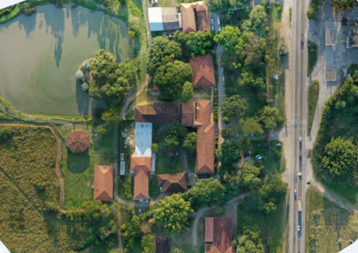

Este projeto foi realizado durante uma Capacitação do grupo YouthMappers UFBA, nele foi utilizado o software WebODM.
Após processar as imagens no software obtivemos dois produtos sendo eles uma orthophoto de alta qualidade e uma nuvem de pontos.

Email igorgarao@hotmail.com